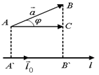

Ортонормированный базис. Декартова прямоугольная система координат
Пусть в качестве базиса выбраны три взаимно
перпендикулярных вектора с длинами, равными единице.
Обозначения:
 ,
, Такой базис называется ортонормированным (ОНБ). Векторы называются базисными ортами.
Зафиксируем точку  – начало координат и
отложим от нее векторы . Полученная система
координат называется прямоугольной декартовой. Координаты любого вектора в этом
базисе называются декартовыми координатами вектора:
– начало координат и
отложим от нее векторы . Полученная система
координат называется прямоугольной декартовой. Координаты любого вектора в этом
базисе называются декартовыми координатами вектора:
– начало координат и
отложим от нее векторы . Полученная система
координат называется прямоугольной декартовой. Координаты любого вектора в этом
базисе называются декартовыми координатами вектора:
Декартовы
координаты вектора
Прямые линии, проведенные через начало координат по
направлениям базисных векторов, называются координатными осями:  – порождает
– порождает  ;
;
 – порождает
– порождает  ;– порождает
;– порождает  .
.
– порождает ;
– порождает ;– порождает .Координаты точки  (вектора ) в декартовой системе координат по
осям , , называются соответственно абсциссой,
ординатой и аПликатой.
(вектора ) в декартовой системе координат по
осям , , называются соответственно абсциссой,
ординатой и аПликатой.
(вектора ) в декартовой системе координат по
осям , , называются соответственно абсциссой,
ординатой и аПликатой.Декартовы прямоугольные координаты вектора
 равны проекциям этого вектора на оси
, , соответственно; другими словами,
равны проекциям этого вектора на оси
, , соответственно; другими словами,
равны проекциям этого вектора на оси
, , соответственно; другими словами,
Проекция вектора
на ось ОХ
,
Проекция вектора
на ось ОY
,
Проекция вектора
на ось ОZ
.
Здесь – углы, которые
составляет вектор с координатными осями , , соответственно, при этом , , называются направляющими косинусами
вектора .
с координатными осями , , соответственно, при этом , , называются направляющими косинусами
вектора .Вектор
Вектор единичной
длины данного направления (орт данного направления)
представляет
собой вектор единичной длины данного направления, или орт данного направления.
Для направляющих косинусов справедливо соотношение:
Сумма квадратов
направляющих косинусов дает единицу
.
Проекция вектора на
ось – величина равна
на
ось – величина равна ,
,где –
орт оси .

Скалярным произведением двух векторов называется число,
равное произведению длин этих векторов на косинус угла между ними:
 Скалярное
произведение векторов
.
Скалярное
произведение векторов
.Если
, ,
то
Выражение
скалярного произведения двух векторов через их координаты
.
Алгебраические и геометрические свойства:
1˚. Переместительное свойство:
Переместительное
свойство относительно скалярного произведения векторов
.
2˚. Сочетательное свойство:
Сочетательное
свойство относительно скалярного произведения векторов
.
3˚. Распределительное свойство:
Распределительное
свойство относительно скалярного произведения векторов
,
Распределительное
свойство относительно скалярного произведения векторов
.
4˚. , если , и ,
если .
5˚.
Выражение длины
вектора через скалярное произведения
; .
6˚.
Вычисление угла
между двумя векторами через их скалярное произведение
.
7˚.
Выражение проекция
одного вектора на другой через их скалярное произведение
,
Выражение проекция одного вектора на
другой через их скалярное произведение
.
8˚. :
Условие перпендикулярности векторов
– условие
перпендикулярности.
9˚.
Длина вектора
, –
длина вектора.
10˚. , ,
Расстояние между двумя точками
– расстояние между двумя
точками.
11˚. Направляющие косинусы вектора:
Направляюший
косинус cosα
,
Направляюший косинус cosβ
,
Направляюший
косинус cosγ
;
Сумма квадратов
напрявляющих косинусов дает еденицу
.